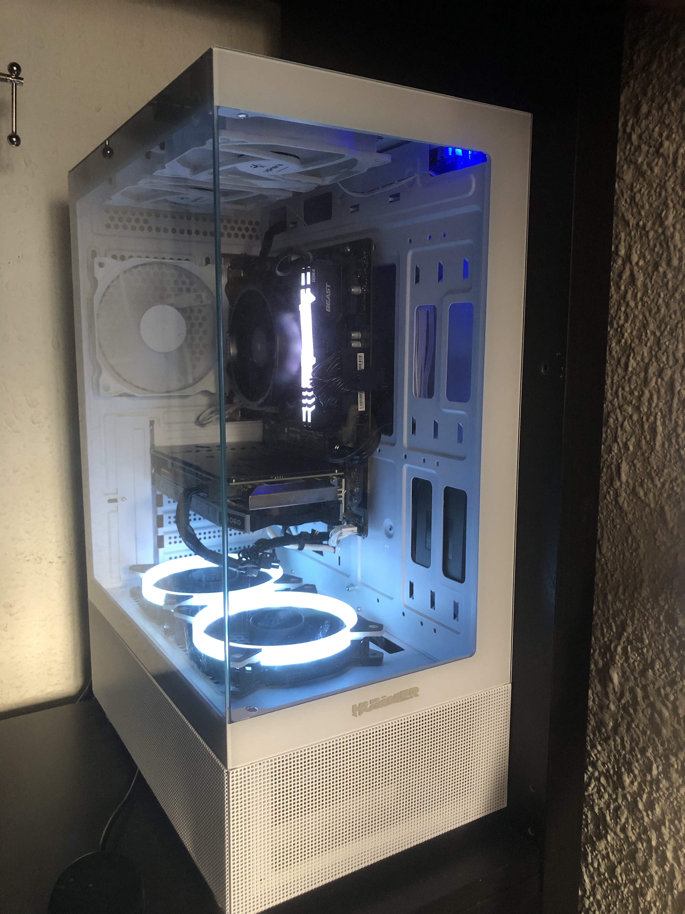
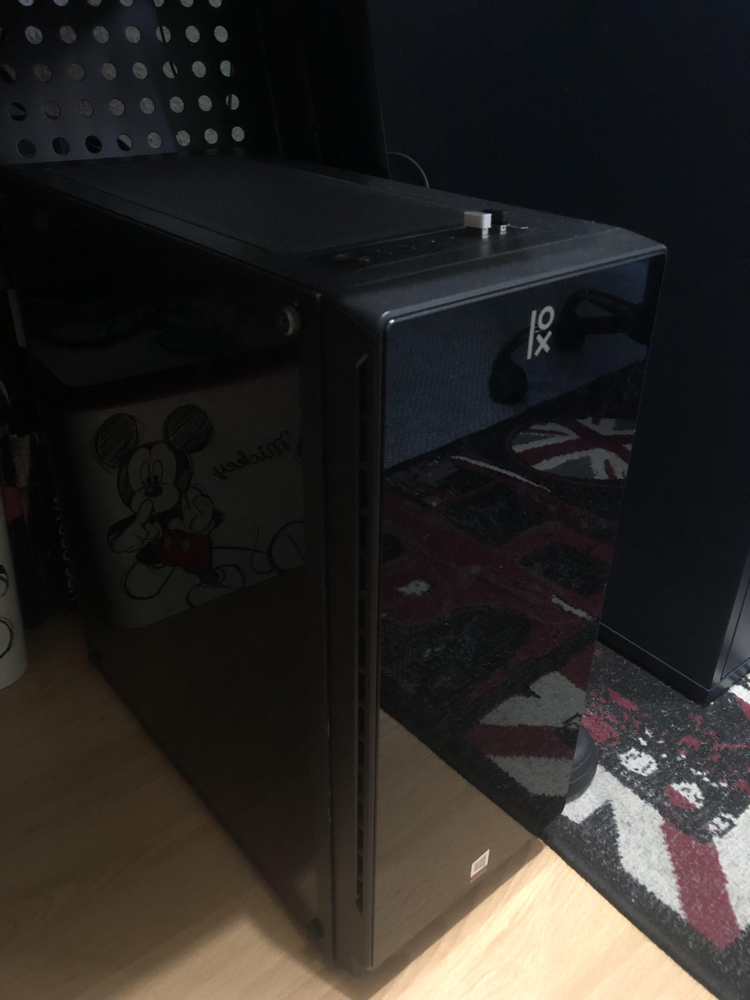

Ryzen 5 4500
Thermalright Assassin Spirit 120 SE
RTX 2060 6GB
16 GB RAM Fury
550 W Corsair Power Supply
NOX Hummer Vision White PC Case
Windows 11

Ryzen 3 3200g
Asus RX 550 4GB
24 Gb RAM DDR4
Mars Gaming MC220
550 W Power Supply
Ubuntu

¿Para que los uso?
El pc de la izquierda lo utilizo para programar, jugar, editar videos y editar fotos
El pc de la derecha lo utilizo como pc con ubuntu para el instituto y también para programar y maquinas virtuales.
Periféricos
Teclado Kemove k98SE
Epomaker EP84 Plus
Razer Deathadder Essential
Logitech G305
Stream Deck Mini
Razer Siren Mini
Logitech Z333
Monitores
Acer EK271HBI 100hz
Acer EK241YHBIF 100hz